codly.highlight-config
Describes one character-level highlight on a source line in a Codly code block. See codly.new for the block’s highlights field.
Signature
codly.highlight-config(line, start: none, end: none, fill: none, tag: none, inset: none, baseline: none, clip: none, outset: none, radius: none, label: none, stroke: none, depth: none)line is the required positional field; every other field is named. A dictionary with a line key can also be cast to this type.
Fields
| Field | Type | Default / required | Meaning |
|---|---|---|---|
line |
int |
Required | One-indexed displayed line number to highlight; must be greater than zero. |
start |
none | int |
none |
Zero-indexed character position where the highlight starts; none becomes 0. |
end |
none | int |
none |
Exclusive zero-indexed end bound; none extends to the end of the line. |
fill |
none | paint | function |
none |
Explicit paint, or a callback receiving the next palette paint; none uses the configured palette. |
tag |
none | str | content |
none |
Optional tag displayed with the highlight. |
inset |
none | length | dictionary |
none |
Overrides codly.highlight's inset. |
baseline |
none | length | auto |
none |
Overrides the highlight box baseline; auto preserves the content baseline. |
clip |
none | bool |
none |
Overrides codly.highlight's clip. |
outset |
none | length | dictionary |
none |
Overrides codly.highlight's outset. |
radius |
none | length |
none |
Overrides codly.highlight's radius. |
label |
none | label |
none |
Label for referencing this highlight; labels apply only when the code block is inside a figure. |
stroke |
none | stroke | function |
none |
Overrides codly.highlight's stroke. |
depth |
none | int |
none |
Controls stacking when highlights overlap; larger values appear on top. |
Behavior
The constructor and dictionary cast normalize omitted or none bounds to start: 0 and an end bound covering the rest of the line. Explicit bounds must be nonnegative; line must be positive. Character positions are zero-indexed and the end is exclusive, unlike the inclusive, one-indexed source-line ranges. A fill paint is used directly and does not consume a palette entry; a callback receives the next palette paint. Highlights using none also consume the next palette entry. An empty configured palette is invalid. Local style fields override the corresponding codly.highlight settings when provided.
Example: Basic Usage
#import "@preview/codly:2.0.0" as codly
#codly.new(
```py
let answer = 42
```,
highlights: (codly.highlight-config(1, start: 4, end: 10, fill: yellow.lighten(65%), tag: "value"),),
)Edit & run on your device
The highlighted source and output update after you stop typing. Copy code includes your edits.
